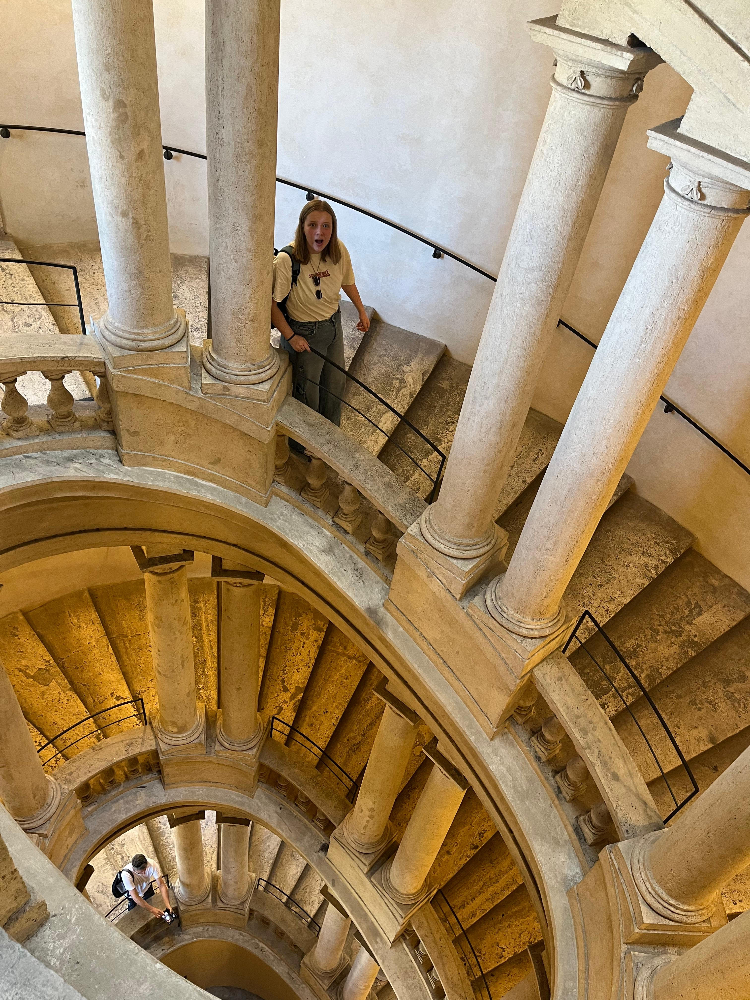

Over mij

Nienke Buursink
3e jaars student Communication & Multimedia Design
Ik ben een creatieve ontwerper en developer met een passie voor webdevelopment, interactieve ervaringen en kunst. Tijdens mijn studie richt ik me vooral op front-end development en het combineren van ontwerp met technologie.
Mijn hobbies

Gitaar spelen
Ik speel graag gitaar en vind het heerlijk om muziek te maken.

Schilderen
Schilderen is een van mijn favoriete manieren om creatief uit te zijn.

Musea bezoeken
Ik bezoek graag musea om nieuwe kunst te ontdekken en mij te inspireren.
Wat me motiveert
Ik combineer graag ontwerp, interactie en development. Wat ik vooral leuk vind is experimenteren met nieuwe technieken en het maken van digitale producten die zowel mooi als toegankelijk zijn.